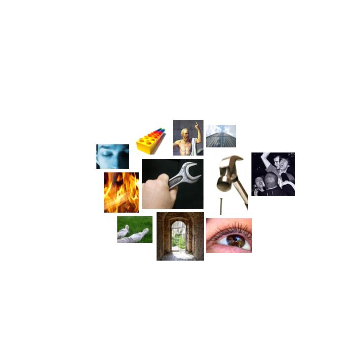

edwards.txt
  instrumental_behavior
instrumental_behavior carry, work, makes, result, spend, reach, use, spent, prepared, make, worked, worked, worked, tried, workers, workers, jobs, job, working, business, pay, worked, make, spent, work, make, work, work, make, build, build, money, buy, pay, make, build, works, money, make, pay, paying, jobs, jobs, jobs, jobs, job, work, work, pay, costs, costs, work, pay, pay, spending, burden, work, working, finish, job, paying, jobs, working, build, build, won, make, build, use, cost, win, used, count, test, won, working, make, won, build, soldiers, work, finish, job, pay, working, pay, use, make, make, soldiers, work, working, worked, make, lessons, make, make, lesson, lesson, make
 hard
hard hard, hard, hard, hard, hard, hard, hard
 brink-passage
brink-passage wallace, line, road, streets, doors, ports, steps, line, line, access, hall, hall, door
 chaos
chaos chance, chance, chance
 vision
vision look, look, saw, saw, saw, vision, seen, bright, light, imagined, color, saw, saw, saw, saw, images, saw, images, see, stars, image, image, shining, light, looks, looked, look, color
 fire
fire heat, warm, flames, smoldering, firefighters, lit
 moral_imperative
moral_imperative responsibility, honor, respect, duties, honored, right, right, rights, law, rights, shouldn't, should, shouldn't, right, respect, should, should, moral, responsibility, responsibility, rights, should, rights, respect, right, respect, rights, right, right, should, should, should
 concreteness
concreteness at, side, here, out, back, close, straight, position, where, at, between, ahead, between, where, here, away, across, at, where, here, where, longer, out, at, where, places, where, place, off, off, here, ahead, ahead, place, here, back, close, forward, places, close, where, front, everywhere, longer, at, where, nearly, long, surrounds, surrounds, outside, out, across, behind, level, nearly, side, middle, east, close, where, somewhere, at, ahead, longer, here, at, ahead, here, at, ahead, at, at, away, over, over, over, where, apart, at
 passivity
passivity safe, safe, laid, safe, bed, secure, security, safe, rest, secure, safe, secure, secure, secure, safe, secure
 consciousness_alteration
consciousness_alteration imagined, dream, dreams, sleep, wake
 height
height highest, grown, grew, growing, grew, cliff, hungry, grow, towers, grow, roof